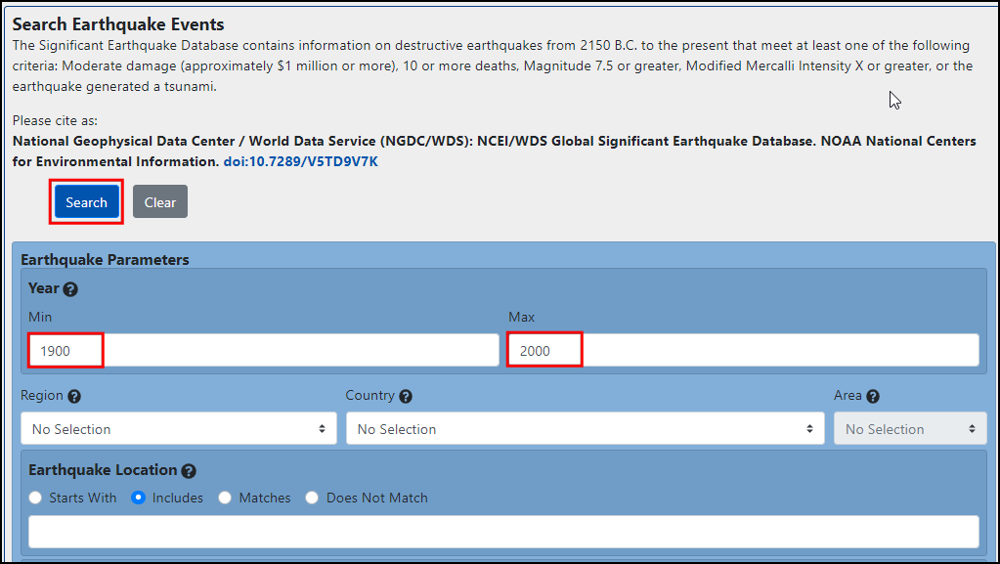
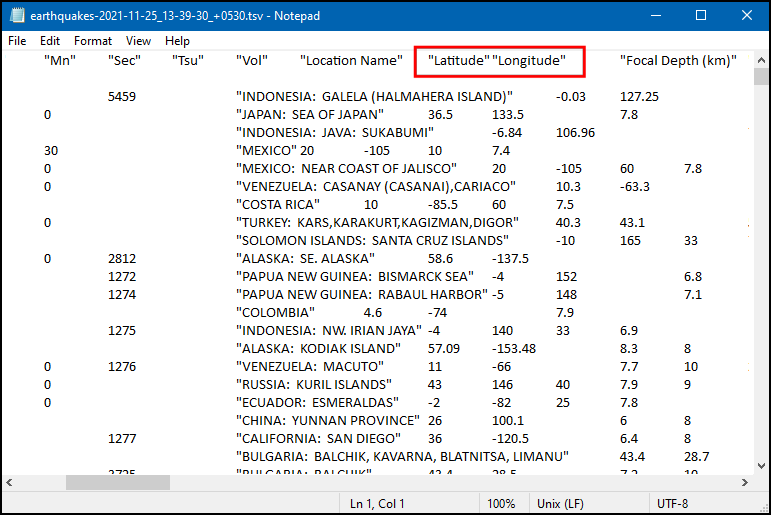

Ujaval Gandhi
Ujaval GandhiUvoz tabela ili CSV datoteka (QGIS3)¶
GIS podaci se često nalaze u tabeli ili proračunskom dokumentu. QGIS vam omogućava da uvezete strukturirane tekstualne datoteke sa koordinatama kao vektorski sloj. Ovaj tutorijal pokazuje kako možete da koristite Upravljač izvorima podataka za uvoz Razgraničenih tekstualnih datoteka.
Pregled zadatka¶
Uvešćemo tekstualnu datoteku sa lokacijama zemljotresa u formatu vrednosti razdvojenih tabulatorima (TSV) u QGIS i kreirati sloj sa tačkama.
Dobijte podatke¶
Za ovaj tutorijal preuzećemo skup podataka o zemljotresima izmeđju 1900-2000 godine z Nacionalnog centra za geofizičke podatke NOAA, koji proizvodi odličan skup podataka o svim značajnim zemljotresima od 2150. godine pre nove ere. Posetite NOAA NCEI portal i unesite Min kao
1900i Max kao2000. Ovo će vratiti sve zemljotrese koji su se dogodili i koje je NOAA zabeležila između tih godina. Za druge specifične rezultate, možete filtrirati pomoću različitih parametara. Kliknite na Search.

Kao rezultat toga, dobili smo 2594 incidenata zemljotresa. Kliknite na ikonu Preuzmi TSV.

Radi lakšeg snalaženja, možete direktno preuzeti kopiju gore navedenih skupova podataka sa linka ispod:
earthquakes-2023-09-12_17-19-15_+0530.tsv
Izvor podataka [NCEI]
Procedura¶
Pregledajte svoj tabelarni izvor podataka. Preuzeta baza podataka o zemljotresima sadrži polja „Geografska širina“ i „Geografska dužina“ koja označavaju lokaciju epicentra zemljotresa i druge povezane atribute. Koristićemo ova polja za uvoz datoteke kao tačkastog sloja. Otvorite podatke u uređivaču teksta kao što je Notepad/TextMate da biste videli sadržaj. Videćete da TAB razdvaja svako polje.

Белешка
Ako imate tabelu, koristite funkciju „Sačuvaj kao“ u svom programu da biste je sačuvali kao „Datoteku razdvojenu tabulatorima“ ili „Datoteku razdvojenu zarezima (CSV)“.
QGIS dolazi sa objedinjenim menadžerom podataka koji vam omogućava da učitate sve podržane formate podataka. Kliknite na dugme Otvori menadžer izvora podataka na Traci sa alatkama za izvore podataka. Takođe možete koristiti prečicu na tastaturi Ctrl + L.

U dijaloškom okviru Data Source Manager, pređite na karticu Delimited Text. Kliknite na dugme … pored File name.

U zavisnosti od operativnog sistema, datoteku možete, ali i ne morate da vidite na preuzetoj lokaciji. U odeljku Formati datoteka, prebacite se na „Sve datoteke (; *.)“ da biste videli tsv datoteku.
Sada ćete videti preuzetu datoteku. Izaberite je i kliknite na Otvori.

U dijaloškom okviru Data Source Manager, putanja do datoteke će biti dostupna u File Name. Promenite Layer name u
1900_2000_earthquakes. U odeljku File format izaberite Custom delimiters i označiteTab. U odeljku Geometry definition izaberite Tack coordinates. Podrazumevano, vrednosti X field i Y field će se automatski popuniti ako pronađe odgovarajuće polje za naziv u unosu. U našem slučaju, to suLongitudeiLatitude. Možete ih promeniti ako uvoz izabere pogrešna polja. Možete ostaviti Geometry CRS na podrazumevaniEPSG:4326 - WGS 84CRS. Ako vaša datoteka sadrži koordinate u drugom CRS-u, možete ovde izabrati odgovarajući CRS. Kliknite na Dodaj.
Белешка
Lako je pomešati X i Y koordinate. Geografska širina određuje položaj tačke u pravcu sever-jug i stoga je to Y koordinata. Slično tome, geografska dužina određuje položaj tačke u pravcu istok-zapad i to je X koordinata.
Sada ćete videti da će podaci biti uvezeni i prikazani na QGIS platnu kao novi sloj pod nazivom „1900_2000_zemljotresi“ sa CRS „EPSG:4326“.

If you want to give feedback or share your experience with this tutorial, please comment below. (requires GitHub account)